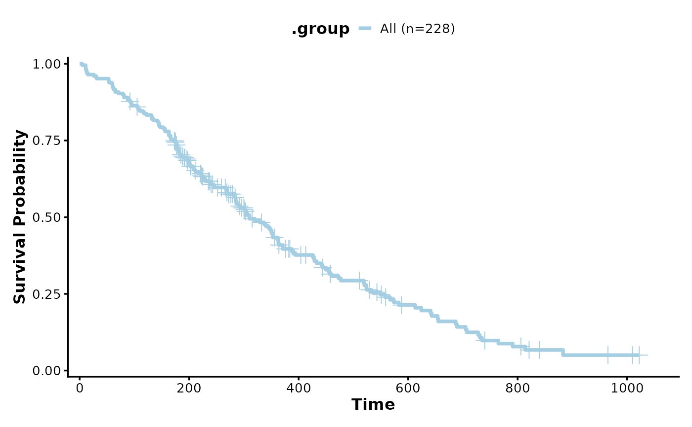
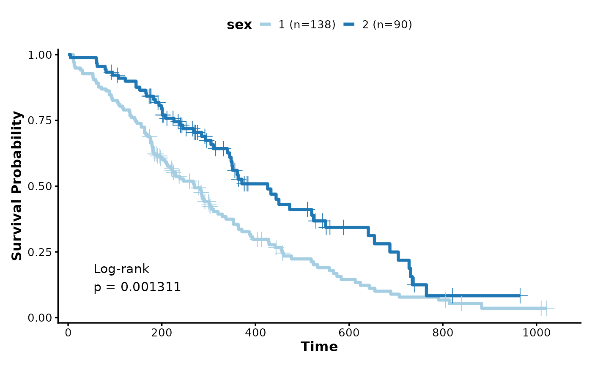
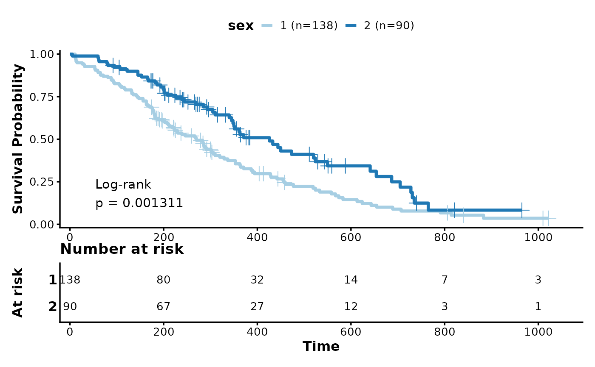
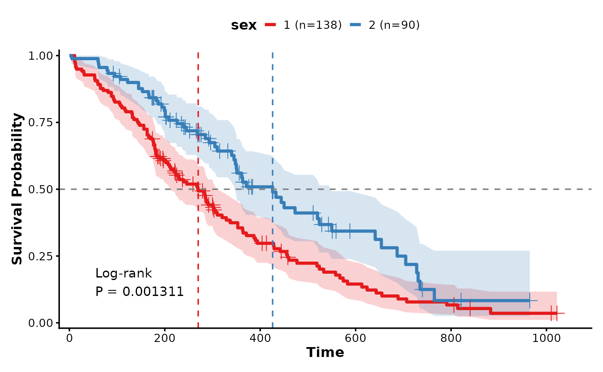
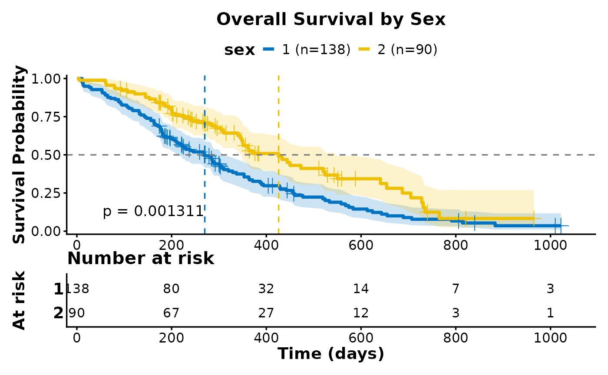

Create publication-ready Kaplan-Meier survival curves with optional risk tables, confidence intervals, and statistical comparisons.
This function provides a complete implementation of Kaplan-Meier survival analysis visualization, supporting single or multiple groups, with automatic p-value calculation using the log-rank test.
Usage
KMPlot(
data,
time,
status,
group_by = NULL,
group_by_sep = "_",
group_name = NULL,
split_by = NULL,
split_by_sep = "_",
facet_by = NULL,
facet_scales = "fixed",
facet_ncol = NULL,
facet_nrow = NULL,
facet_byrow = TRUE,
show_pval = TRUE,
pval_method = "logrank",
pval_digits = 4,
pval_size = 4.5,
pval_coord = c(0.05, 0.1),
show_conf_int = FALSE,
conf_alpha = 0.2,
show_median_line = "none",
median_linetype = 2,
median_linewidth = 0.6,
line_width = 1.3,
show_risk_table = FALSE,
risk_table_height = 0.25,
risk_table_fontsize = 3.5,
show_censors = TRUE,
censor_shape = 3,
censor_size = 4,
censor_stroke = 0.5,
theme = "theme_ggforge",
theme_args = list(),
palette = "Paired",
palcolor = NULL,
alpha = 1,
aspect.ratio = NULL,
x_breaks = NULL,
y_breaks = waiver(),
x_min = NULL,
x_max = NULL,
y_min = 0,
y_max = 1,
legend.position = "top",
legend.direction = "horizontal",
title = NULL,
subtitle = NULL,
xlab = "Time",
ylab = "Survival Probability",
combine = TRUE,
nrow = NULL,
ncol = NULL,
byrow = TRUE,
seed = 8525,
axes = NULL,
axis_titles = axes,
guides = NULL,
design = NULL,
...
)Arguments
- data
A data frame containing the data to plot
- time
Column name for time variable (numeric).
- status
Column name for event status (1=event, 0=censored).
- group_by
Column(s) for grouping survival curves.
- group_by_sep
Separator for concatenating multiple group columns.
- group_name
Legend title for groups.
- split_by
Column name(s) to split data into multiple plots
- split_by_sep
Separator when concatenating multiple split_by columns
- facet_by
Column name(s) for faceting the plot
- facet_scales
Scales for facets: "fixed", "free", "free_x", "free_y"
- facet_ncol
Number of columns in facet layout
- facet_nrow
Number of rows in facet layout
- facet_byrow
Fill facets by row (TRUE) or column (FALSE)
- show_pval
Show log-rank test p-value.
- pval_method
P-value calculation method ("logrank").
- pval_digits
Number of digits for p-value.
- pval_size
Text size for p-value.
- pval_coord
Position of p-value as c(x, y) where x is fraction of x-axis, y is absolute.
- show_conf_int
Show confidence interval ribbons.
- conf_alpha
Transparency for confidence interval ribbons.
- show_median_line
Show median survival lines: "none", "h", "v", "hv".
- median_linetype
Line type for median survival lines.
- median_linewidth
Line width for median survival lines.
- line_width
Width of survival curves.
- show_risk_table
Show risk table below plot.
- risk_table_height
Relative height of risk table (0-1).
- risk_table_fontsize
Font size for numbers in risk table.
- show_censors
Show censoring marks on curves.
- censor_shape
Shape for censoring marks.
- censor_size
Size for censoring marks.
- censor_stroke
Stroke width for censoring marks.
- theme
Theme name (string) or theme function
- theme_args
List of arguments passed to theme function
- palette
Color palette name
- palcolor
Custom colors for palette
- alpha
Transparency level (0-1)
- aspect.ratio
Aspect ratio of plot panel
- x_breaks
Custom x-axis breaks (time points).
- y_breaks
Custom y-axis breaks.
- x_min
Minimum x-axis value.
- x_max
Maximum x-axis value.
- y_min
Minimum y-axis value (default: 0).
- y_max
Maximum y-axis value (default: 1).
- legend.position
Legend position: "none", "left", "right", "bottom", "top"
- legend.direction
Legend direction: "horizontal" or "vertical"
- title
Plot title
- subtitle
Plot subtitle
- xlab
X-axis label
- ylab
Y-axis label
- combine
Whether to combine split plots into one
- nrow
Number of rows when combining plots
- ncol
Number of columns when combining plots
- byrow
Fill combined plots by row
- seed
Random seed for reproducibility
- axes
How to handle axes in combined plots ("keep", "collect", "collect_x", "collect_y")
- axis_titles
How to handle axis titles in combined plots
- guides
How to handle guides in combined plots ("collect", "keep", "auto")
- design
Custom layout design for combined plots
Examples
# \donttest{
library(survival)
# Basic Kaplan-Meier plot
KMPlot(data = lung, time = "time", status = "status")

# Multiple groups with p-value
KMPlot(
data = lung,
time = "time",
status = "status",
group_by = "sex",
show_pval = TRUE
)

# With risk table
KMPlot(
data = lung,
time = "time",
status = "status",
group_by = "sex",
show_risk_table = TRUE,
show_pval = TRUE
)

# With confidence intervals and median lines
KMPlot(
data = lung,
time = "time",
status = "status",
group_by = "sex",
show_conf_int = TRUE,
show_median_line = "hv",
palette = "Set1"
)

# Publication-ready plot
KMPlot(
data = lung,
time = "time",
status = "status",
group_by = "sex",
show_risk_table = TRUE,
show_pval = TRUE,
show_conf_int = TRUE,
show_median_line = "hv",
palette = "jco",
title = "Overall Survival by Sex",
xlab = "Time (days)",
ylab = "Survival Probability",
theme_args = list(base_size = 14)
)

# }